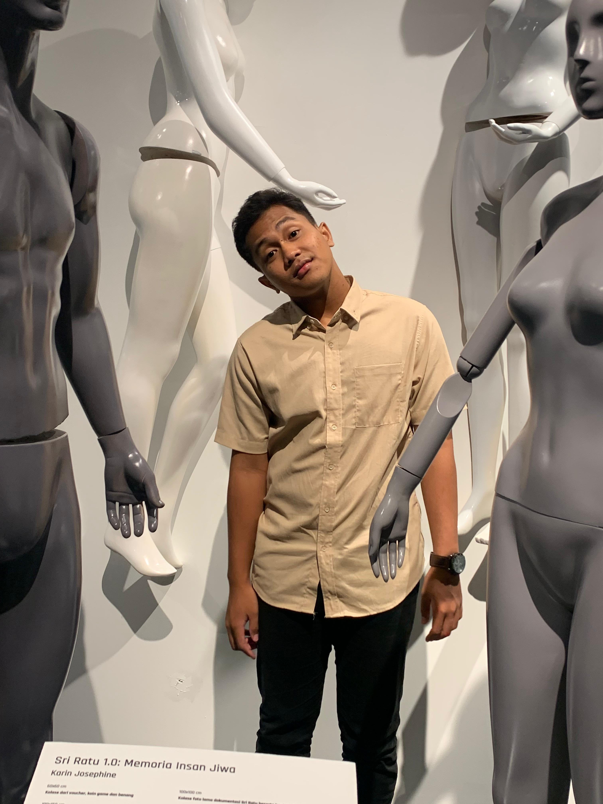

Halo, Saya Rafie Tegar
Fresh Graduate S1 Teknik Informatika yang berfokus pada Web Development dan Backend Engineering.
Saya memiliki pengalaman membangun berbagai sistem berbasis Laravel, mulai dari sistem rumah sakit, monitoring banjir, hingga sistem penyewaan. Selain itu, saya juga aktif sebagai entrepreneur dan founder komunitas olahraga.

Tentang Saya
Saya adalah lulusan S1 Teknik Informatika yang akan wisuda pada 30 April 2026. Saya memiliki minat besar dalam dunia teknologi, khususnya pengembangan web dan backend system.
Saya terbiasa menggunakan teknologi seperti Laravel, PHP, MySQL, JavaScript, dan berbagai tools modern lainnya. Saya juga memiliki pengalaman dalam membangun sistem nyata yang digunakan untuk kebutuhan bisnis dan organisasi.
Selain di bidang teknologi, saya juga aktif sebagai founder World Tennis Club, yang mengasah kemampuan saya dalam leadership, komunikasi, dan manajemen bisnis.